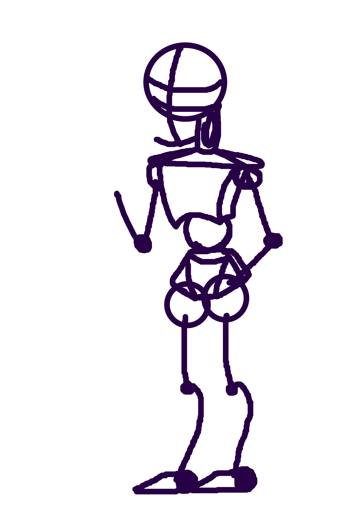
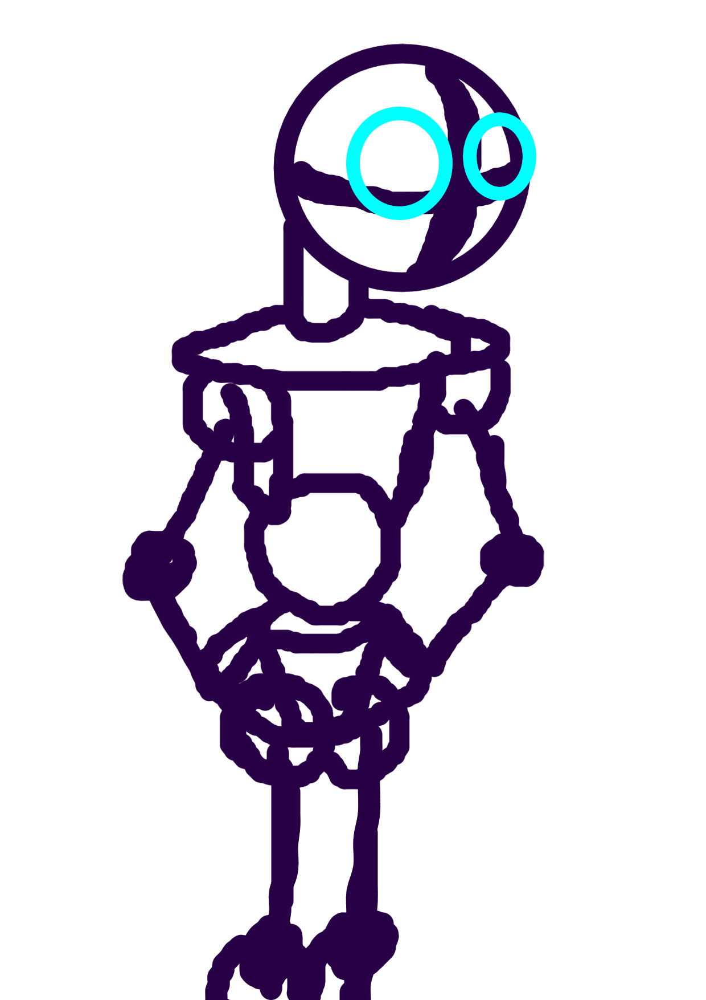

En esta sección hablaré de las bases que se deben hacer y tomar en cuenta a la hora de hacer un dibujo, en su mayoría uno ve el dibujo en si pero lo que no ve es el proceso por el que pasa para llegar a ser lo que se muestra, en un inicio puede llegar a parecer sencillo, pues las bases son hacer figuras y proporcionar, y aunque si lo sea lo difícil viene cuando se pone uno a hacerlo pues de principio no le va a salir tal cual, enseguida mostraré los pasos para hacer una buena base, diferentes tipos de bases y el como usarlas
Se inicia normalmente con un círculo para la cabeza, la forma tradicional, ya dependiendo del estilo de dibujo y la persona decide si hacer una línea un tanto más larga que el círculo o no, la línea debe ser horizontal y esta línea será guía para determinar el lado hacia donde vea el personaje, si esta de frente se usa una línea horizontal recta, si esta de lado se usa una línea horizontal curveada, para que sea bien acomodada la línea curveada el lado hacia donde verá el personaje debe ser el lado que más acercado este al límite del círculo, me explico mejor, si ve hacia la izquierda en ese caso la línea horizontal debe curvearse hacia la izquierda, en caso contrario por lógica la línea se curvea hacia la derecha, esta primera línea horizontal ayuda para dividir la mitad de la cara.
Como mencioné antes depende de la persona y el estilo de dibujo el como seguirá la línea, si se va más abajo saliendo del círculo la proporción debe ser de la mitad del círculo, si no simplemente se limitará al círculo, ejemplo gráfico:
 Mirada hacia la izquierda, ejemplo  Mirada hacia la derecha ejemplo